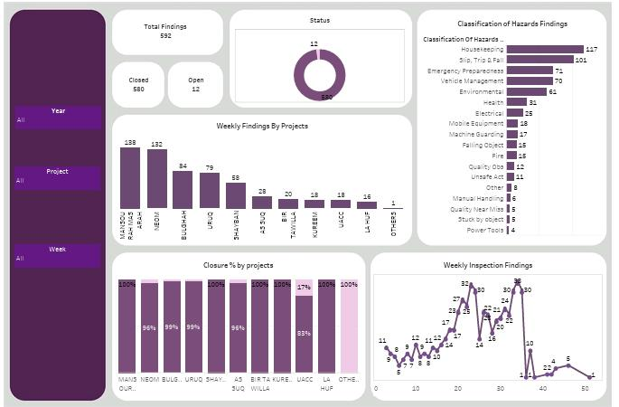
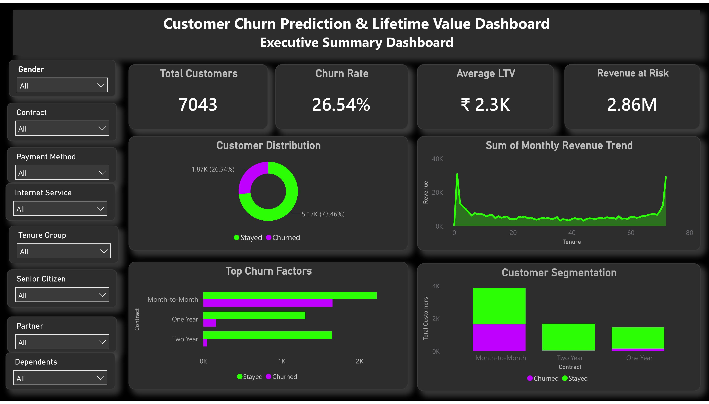
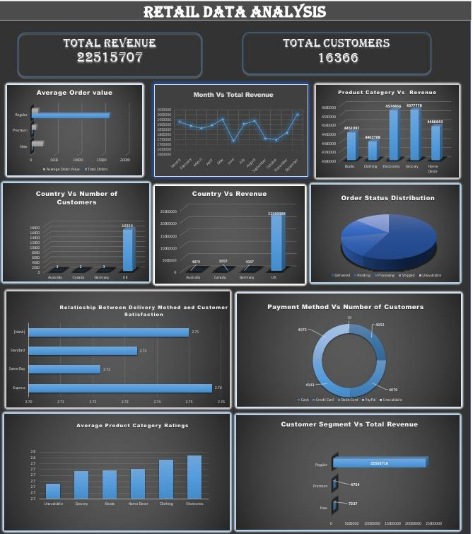

MARIYAM SHAHLA HARIS
Seeking Role:
Transforming complex data into actionable business insights through advanced analytics, structured data modeling, and compelling interactive visualizations.
Transforming complex data into actionable business insights through advanced analytics, structured data modeling, and compelling interactive visualizations.
The story behind the data enthusiast.
Data Analyst
Kerala, India
B.Sc Mathematics
University of Calicut (2022-2025)
Diploma in Data Analysis with Python
Ofsys Educations
IBM Certification in Data Analytics
IBM
I'm a passionate Data Analyst based in Kerala, India, with a strong analytical foundation rooted in Mathematics from the University of Calicut. My journey into analytics stems from a deep curiosity about how raw, unstructured datasets can be decoded to tell compelling stories and guide critical business decisions.
I came to analytics from teaching, where I learned to break complex ideas into clear, simple explanations. I now apply that same skill to turning data into insights that stakeholders can understand and act on.
To bridge the gap between mathematical theory and practical implementation, I completed a Diploma in Data Analysis with Python and earned an IBM Certification in Data Analytics. Together they gave me hands-on experience with data cleaning, SQL querying, and analytical workflows.
What excites me most about data analytics is the balance of technical problem-solving and visual storytelling. Whether it's optimization of retail performance, identifying trends in hazard risks, or crafting automated dashboards that empower stakeholders—I thrive on transforming data chaos into operational clarity.
Mathematical approach to statistical validation, data cleaning, and data quality assurance.
IBM-certified in Data Analytics and actively adapting to modern tools and analytics trends.
Applying analytics skills to production-style problems in a structured internship program.
Zaalima Development Pvt. Ltd.
Cleaned and validated 7,043 telecom customer records, supported feature engineering, and built Power BI visuals that surfaced churn drivers and customer lifetime value segments.
Built Power BI dashboards on fraud model outputs and contributed to Grafana and Prometheus monitoring.
A showcase of end-to-end analytics solutions demonstrating technical expertise and business impact.
Interactive Tableau dashboard tracking workplace safety observations and closure performance across project sites.

End-to-end ML system that predicts customer churn risk and forecasts lifetime value, deployed as a live API and visualized through an interactive BI dashboard.

Fraud detection pipeline built by a team of three interns at Zaalima Development. I handled the Power BI reporting on the model outputs and contributed to monitoring.
Team project (3 members) built during my data analytics internship at Zaalima Development: a fraud detection pipeline with model outputs, monitoring and reporting. My part was monitoring and visualization.

Excel dashboard analyzing retail revenue, seasonal trends, and customer performance across product categories.

Exploratory Data Analysis (EDA) in Python on a large crime dataset, covering cleaning, trends and victim demographics.
MySQL analysis of store orders covering revenue, product performance, and seasonal sales patterns.
Comprehensive toolkit for database management, data mining, and interactive visualization.
Seeking opportunities as a Data Analyst, Power BI Developer, MIS Executive or Business Analyst. Open to roles that leverage data to drive business decisions.